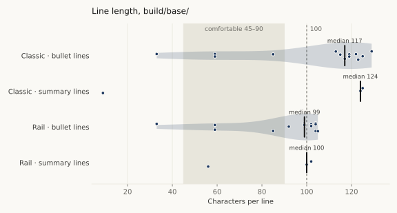

Geist Serif Regular, Geist Medium, Geist Regular: all embedded, all with a Unicode map
Source
commit 4056a3d
Reviewed
24 November 2026
Resume review: base, classic
The page is clean, one column, machine-readable and fully traced to evidence. The new scope-style bullets read naturally but carry no figures at all (0 of 9), one bullet claims adoption the evidence does not record, and a 2-year gap after graduation is unexplained. Fix those three before sending. Skills now uses 4 groups and covers every tool the bullets name except Podman, which you left out by choice.
EvidenceFairAll 6 bullets traced; 1 claim outruns its evidence; 14 files still drafts
ScreeningFix2-year 3-month gap between education and first job
CV standardsFix0 of 9 bullets carry a number
ReadabilityFairMedian bullet line 117 characters
FormatFairBody 8.8 pt, below 9.5 pt
ATS and accessGoodAll text extracts; AA contrast; tagged PDF
Summary
Area
Result
Status
Top improvement
Evidence traceability
6 of 6 bullets traced; 0 banned-term hits in 64 terms; 1 claim stretched
Fix
Reword the chatbot-core sentence so it does not say client projects install it
Screening
Gap of 2y 3m (Apr 2020 → Jul 2022); Experience heading at 31% of the page
Fix
Explain the gap before sending
CV standards
0 of 9 bullets carry a figure; 6 bullets in the job
Fix
Put scale figures inside the scope sentences
Readability
Bullet lines median 117, max 129 characters; bullets 18–29 words
Opinion, not measured: how the resume positions you, read as a careers adviser would.
Choose the title the bullets earn. The six bullets show pipelines, backends, deployment and LLM systems more than statistics or experiments. The evidence itself records "AI and backend engineer" for 2025–2026. "Data Scientist" invites questions about A/B tests and modelling that the page does not answer; "AI Engineer" or "Machine Learning Engineer" matches what is printed. Keep a data-science version for data-science ads.
Keep the scope style, but give it scale. The bullets now read like a confident role summary, which suits a consultancy role across many clients. What they lose is size: a reader cannot tell a demo from a system on 3 camera sites. One figure of scale per bullet (sites, recordings, test cases, camera zones) keeps the style and gives the reader something to weigh.
Show the growth inside the role. One entry spans Jul 2022 to now, from Django content systems to LLM serving and agents. Printed as one block, that progression is invisible. If your title changed, split the entry by period; if not, order the labels so the 2025–2026 work leads, as it does now.
Close the gap before a recruiter asks. Graduation (Apr 2020) to the first job (Jul 2022) is 2 years 3 months with nothing printed. One line (an earlier job, study, or a project with dates) removes the question.
Reader impressions
Opinion: how each reader is likely to take the page, in the order they usually see it.
HR or recruiter· a first screen of under a minute
First impression: tidy, one page, broad keyword coverage: YOLO, RAG, Airflow, Django, Docker.
Looks for: title match, dates, gaps, years of experience.
Likely question: "What did you do between April 2020 and July 2022?"
Hiring manager· an AI or data team lead
First impression: a generalist who ships end to end, from models to deployment.
Looks for: scale and outcomes: how many users, sites or records, and whether systems run in production.
Likely question: "Which of these are in production, and how big are they?" No bullet says.
Technical interviewer· an ML or backend engineer
First impression: wide tool list, each tied to a system.
Looks for: depth: one system to dig into.
Likely question: "Walk me through the retail-shelf pipeline" or "How did you evaluate the RAG source?" Your brag document's interview stories answer both well.
1. Evidence traceability
Each bullet's trace comment was followed to its evidence file, and the wording compared with that file's Summary bullet, What I Did and Remarks. Banned terms were searched with a script over every name in raw/themather/mapping.yml.
Check
Result
Status
Improvement
Trace comments
6 of 6 bullets traced. 5 cite Summary bullets; Deployment and CI cites a cctv Remark and a retail-shelf Context line, not a B<n>
Improve
Run verify on the cctv file and add the on-premises deployment (What I Did: "Scripted the on-premises deployment") to a Summary bullet
Claims
LLM applications: "a reusable chatbot core that client projects install". Evidence: a prototype proven with two mock clients; adoption "to confirm"
Fix
"Prototype a reusable chatbot core, packaged as a versioned wheel for client projects." (13 words; bullet total 29)
Claims, minor
LDA comes from a prototype comparison app (survey B3); the classroom attention method's authorship is open (classroom Remarks)
Improve
Be ready to say "prototype" for LDA in interview; answer the authorship question in verify
Numbers
No figures printed, so none to mismatch
Pass
See CV standards for the cost of having none
Impact
No impact claims (faster, adopted, delivered)
Pass
—
Review state
14 of 14 traced files have no reviewed:
Improve
Run /resume-builder:resume-auto-mode verify, starting with hitl-chatbot, chatbot-core and cctv
Skills
Every listed skill appears in a tools: line, except Haskell (your personal project, marked in the YAML comment). Bullet tools covered, except Podman, left out by choice
Pass
Drop Podman from the Deployment and CI bullet too, if you want the two to match
Untraced sections
3 projects and 1 activity have no evidence file: your own account
Improve
Fine for personal projects; keep the repos public
Banned terms
0 hits for 64 names, repos and hosts from mapping.yml
Pass
—
2. Screening: the first look
Positions come from Typst's own layout; the gap from the dates in the YAML.
Check
Result
Status
Improvement
Section positions
Skills 17%, Experience heading 263 pt (31%): inside the top third
Pass
Optional: Experience above Skills moves it to 17% (tested before the Skills change, still 1 page)
Employment gaps
GAP 2y 3m between education (Apr 2020) and Data Scientist (Jul 2022)
Fix
Add the earlier role, study or dated project, or a one-line note
Recency
Current role dated "Jul 2022 – Present", in the date column
Pass
—
Title match
No job ad. Header "Data Scientist and Developer", job "Data Scientist"; evidence roles "data and backend developer" then "AI and backend engineer"
Improve
Decide the title per target, see the adviser's view
Progression
One entry, 4 years 4 months, scope grew from Django backends to LLM systems
Improve
Split by period if the title changed
3. CV standards
Check
Result
Status
Improvement
Measurable outcomes
0 of 9 bullets carry a figure (years excluded)
Fix
Add scale inside the scope sentence; drafts below, all from evidence Numbers
Bullets per job
6
Pass
—
Headline
No headline; the introduction opens "I am a data scientist and developer", repeating the job title under the name
Improve
Open with the claim instead: "I build computer vision, data and LLM systems and deploy them to production."
Verbs and tense
Every bullet starts with a verb; present tense in the current job and current projects
Pass
—
Spelling
British forms throughout (analyse, visualises, standardise); no US spellings found by reading the page
Pass
—
Personal details
No photo, birth date, nationality or marital status
Pass
—
Consistency
Date without a month: 2025 – Present (Astro Digital Garden). Project without a link: POS Rewrite in Rust
Improve
Add the start month; link the repo or mark it private
Scale figures that fit the scope style
NowBuild vision pipelines for vehicle and accident detection, face-recognition check-in, classroom attention, and retail shelves, and train detection models with YOLO and RF-DETR. (25)
FixBuild vision pipelines for road safety on 3 camera sites, face-recognition check-in, classroom attention in ~930 recordings, and retail shelves, and train models with YOLO and RF-DETR. (29; road-safety B1, classroom B1)
NowBuild a Qdrant RAG source and an evaluation runner for a client's support chatbot. Prototype a reusable chatbot core that client projects install as a versioned package. (29)
FixBuild a Qdrant RAG source and a runner for a client's 633-case chatbot test set. Prototype a reusable chatbot core, packaged as a versioned wheel for client projects. (30; hitl-chatbot B4, chatbot-core B1)
NowBuild Airflow pipelines that move energy telemetry, legacy point-of-sale data, and booth-camera events into TimescaleDB, PostgreSQL, and MongoDB. (20)
FixBuild Airflow pipelines that move energy telemetry, legacy point-of-sale data, and events from 12 booth camera zones into TimescaleDB, PostgreSQL, and MongoDB. (24; event-booth B1)
4. Readability
Line lengths from pdftotext -layout for both templates. Bullet words from the merged YAML, label included.
Check
Result
Status
Improvement
Line length
Classic: median 117, max 129 characters; 9 of 13 lines over 100
Improve
Rail template: median 99, max 105. A larger body size alone barely moves it (115 at 9.5 pt)
Bullet length
25, 29, 25, 20, 26, 18 words
Pass
Your limit is 30 (wiki/me.md); this skill's own threshold says 25, which flags 29 and 26. See the method note
Wrapped lines
Last lines of 11, 10, 5 and 10 words
Pass
—
Summary
41 words
Pass
—

Characters per printed line; the band marks 45–90. Made by uv run review/scripts/line_lengths.py --slug base.
Lines
n
min
median
max
> 100
Classic
Bullet lines
13
33
117
129
9
Summary lines
3
9
124
125
2
Rail
Bullet lines
13
33
99
105
6
Summary lines
3
56
100
102
1
5. Format and typography
Check
Result
Status
Improvement
Length
1 page, maxPages 1, 431 words
Pass
—
Paper and margins
A4; margins 15 mm × 13 mm
Pass
—
Type sizes
Body 8.8 pt; smallest 8.5 pt
Improve
Tested again with the new Skills: 9.0, 9.2 and 9.5 pt overflow to 2 pages; 9.5 pt fits once Activities is dropped
Fonts
3 fonts, all embedded, all with a Unicode map
Pass
—
File name
Built as classic.pdf
Improve
Send as Phattharanat-Khunakornophat-Resume.pdf
6. ATS
Check
Result
Status
Improvement
Text
431 words; 0 ligatures; 0 replacement characters
Pass
—
Structure
One column; standard section names; contact details in the body
Pass
—
Skills order
-raw keeps each label with its skills, e.g. "Data, ML and LLM pandas, NumPy, …"
Pass
—
Keywords
No job ad. Common data-science terms missing from the page: statistics, experiments, MLflow, Spark. SQL and AWS are now in Skills
Improve
Add only those you use
7. Contrast and accessibility
Colour
Used for
Status
Ratio and improvement
#141413
Body text
AAA
18.43:1
#3d3d3a
Contact line
AAA
10.90:1
#504e49
Entry descriptions
AAA
8.31:1
#6b6a64
Dates, skill labels
AA
5.43:1
#1b365d
Job title, links
AAA
12.12:1; link text is the address, so colour is not the only cue
#e8e6dc
Section rules
Exempt
1.25:1; decorative
Check
Result
Status
Improvement
PDF accessibility
Tagged yes; title set; /Lang(en)
Improve
Add region: "gb" to set text(lang: "en") in lib/style.typ: tested, gives /Lang(en-GB)
Fixes, in priority order
Fix
Where
Effort
Impact
1. Reword the chatbot-core sentence
data/resume.yml, LLM applications
Quick
Removes the one claim the evidence does not back
2. Explain the Apr 2020 – Jul 2022 gap
Experience or a note
Quick
Answers the recruiter's first question
3. Add scale figures to 3 bullets
Computer vision, LLM applications, Data engineering
Quick
0 → 3 bullets with a number, style unchanged
4. Move Experience above Skills (optional)
sections
Quick
First job higher on the page; already passes at 31%
5. Set /Lang to en-GB
lib/style.typ
Quick
Screen readers and spellcheckers use British English
6. Settle the job title
header.jobTitle, experience jobTitle
Medium
Title matches the work printed
7. Raise body size to 9.5 pt
lib/style.typ; drop Activities
Medium
Meets the 9.5 pt body threshold
8. Try the rail template
templates/rail.typ
Medium
Median line 117 → 99 characters
9. Verify the 14 draft evidence files
/resume-builder:resume-auto-mode verify
Medium
Turns every trace from draft to reviewed
10. Add the month to Astro Digital Garden; link POS Rewrite